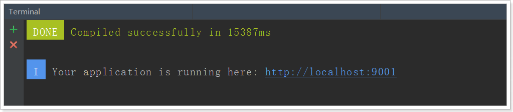
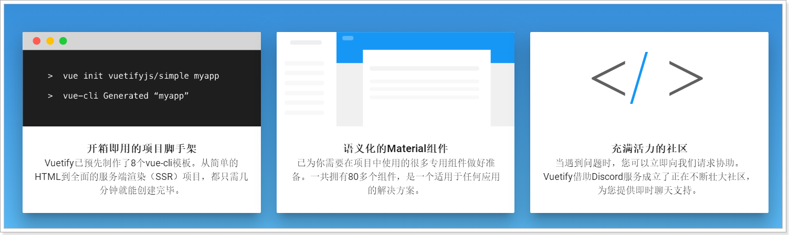
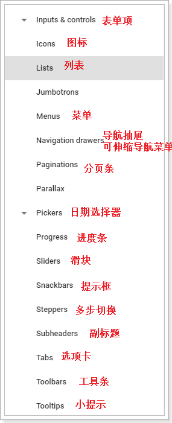

使用vuetify-后台系统前端的结构以及搭建细节.
还介绍了自定义组件的使用.
1.搭建后台管理前端
1.1.导入已有资源
后台项目相对复杂，为了有利于教学，我们不再从0搭建项目，而是直接使用课前资料中给大家准备好的源码：

我们解压缩，放到工作目录中：
然后在Intellij idea中导入新的工程：

选中我们的工程：
1.2.安装依赖
你应该注意到，这里并没有node_modules文件夹，方便给大家下发，已经把依赖都删除了。不过package.json中依然定义了我们所需的一切依赖：
我们只需要打开终端，进入项目目录，输入：npm install命令，即可安装这些依赖。
大概需要几分钟。
如果安装过程出现以下问题：

建议删除node_modules目录，重新安装。或者copy其他人的node_modules使用
1.3.运行一下看看
在package.json文件中有scripts启动脚本配置，可以输入命令：npm run dev或者npm start

发现默认的端口是9001。访问：http://localhost:9001
会自动进行跳转：

1.4.目录结构

webpack：是一个现代 JavaScript 应用程序的*静态模块打包器(module bundler)*。并且提供了前端项目的热部署插件。
1.5.调用关系
我们最主要理清index.html、main.js、App.vue之间的关系：
理一下：
- index.html：html模板文件。定义了空的
div，其id为app。 - main.js：实例化vue对象，并且通过id选择器绑定到index.html的div中，因此main.js的内容都将在index.html的div中显示。main.js中使用了App组件，即App.vue，也就是说index.html中最终展现的是App.vue中的内容。index.html引用它之后，就拥有了vue的内容（包括组件、样式等），所以，main.js也是webpack打包的入口。
- index.js：定义请求路径和组件的映射关系。相当于之前的
<vue-router> - App.vue中也没有内容，而是定义了vue-router的锚点：
<router-view>,我们之前讲过，vue-router路由后的组件将会在锚点展示。 - 最终结论：一切路由后的内容都将通过App.vue在index.html中显示。
- 访问流程：用户在浏览器输入路径，例如：http://localhost:9001/#/item/brand –> index.js(/item/brand路径对应pages/item/Brand.vue组件) –> 该组件显示在App.vue的锚点位置 –> main.js使用了App.vue组件，并把该组件渲染在index.html文件中（id为“app”的div中）
2.Vuetify框架
2.1.为什么要学习UI框架
Vue虽然会帮我们进行视图的渲染，但样式还是由我们自己来完成。这显然不是我们的强项，因此后端开发人员一般都喜欢使用一些现成的UI组件，拿来即用，常见的例如：
- BootStrap
- LayUI
- EasyUI
- ZUI
然而这些UI组件的基因天生与Vue不合，因为他们更多的是利用DOM操作，借助于jQuery实现，而不是MVVM的思想。
而目前与Vue吻合的UI框架也非常的多，国内比较知名的如：
- element-ui：饿了么出品
- i-view：某公司出品
然而我们都不用，我们今天推荐的是一款国外的框架：Vuetify
官方网站：https://vuetifyjs.com/zh-Hans/

2.2.为什么是Vuetify
有中国的为什么还要用外国的？原因如下：
- Vuetify几乎不需要任何CSS代码，而element-ui许多布局样式需要我们来编写
- Vuetify从底层构建起来的语义化组件。简单易学，容易记住。
- Vuetify基于Material Design（谷歌推出的多平台设计规范），更加美观，动画效果酷炫，且风格统一
这是官网的说明：

缺陷：
- 目前官网虽然有中文文档，但因为翻译问题，几乎不太能看。
2.3.怎么用？
基于官方网站的文档进行学习：

我们重点关注UI components即可，里面有大量的UI组件，我们要用的时候再查看，不用现在学习，先看下有什么：


以后用到什么组件，就来查询即可。
2.4.项目页面布局
接下来我们一起看下页面布局。
Layout组件是我们的整个页面的布局组件：

一个典型的三块布局。包含左，上，中三部分：

里面使用了Vuetify中的2个组件和一个布局元素：
v-navigation-drawer：导航抽屉，主要用于容纳应用程序中的页面的导航链接。v-toolbar：工具栏通常是网站导航的主要途径。可以与导航抽屉一起很好地工作，动态选择是否打开导航抽屉，实现可伸缩的侧边栏。
v-content：并不是一个组件，而是标记页面布局的元素。可以根据您指定的app组件的结构动态调整大小，使得您可以创建高度可定制的组件。
那么问题来了：v-content中的内容来自哪里？

- Layout映射的路径是
/ - 除了Login以外的所有组件，都是定义在Layout的children属性，并且路径都是
/的下面 - 因此当路由到子组件时，会在Layout中定义的锚点中显示。
- 并且Layout中的其它部分不会变化，这就实现了布局的共享。
3.自定义组件
3.1.树组件的用法
3.1.1.示例
<v-tree url="/item/category/list"
:isEdit="true"
@handleAdd="handleAdd"
@handleEdit="handleEdit"
@handleDelete="handleDelete"
@handleClick="handleClick"
/>
效果：
3.1.2.属性列表
| 属性名称 | 说明 | 数据类型 | 默认值 |
|---|---|---|---|
| url | 用来加载数据的地址，即延迟加载 | String | - |
| isEdit | 是否开启树的编辑功能 | boolean | false |
| treeData | 整颗树数据，这样就不用远程加载了 | Array | - |
这里推荐使用url进行延迟加载，每当点击父节点时，就会发起请求，根据父节点id查询子节点信息。
当有treeData属性时，就不会触发url加载
远程请求返回的结果格式：
[
{
"id": 74,
"name": "手机",
"parentId": 0,
"isParent": true,
"sort": 2
},
{
"id": 75,
"name": "家用电器",
"parentId": 0,
"isParent": true,
"sort": 3
}
]
3.1.3.事件：
| 事件名称 | 说明 | 回调参数 |
|---|---|---|
| handleAdd | 新增节点时触发，isEdit为true时有效 | 新增节点node对象，包含属性：name、parentId和sort |
| handleEdit | 当某个节点被编辑后触发，isEdit为true时有效 | 被编辑节点的id和name |
| handleDelete | 当删除节点时触发，isEdit为true时有效 | 被删除节点的id |
| handleClick | 点击某节点时触发 | 被点击节点的node对象,包含全部信息 |
3.1.4.完整node的信息
回调函数中返回完整的node节点会包含以下数据：
{
"id": 76, // 节点id
"name": "手机", // 节点名称
"parentId": 75, // 父节点id
"isParent": false, // 是否是父节点
"sort": 1, // 顺序
"path": ["手机", "手机通讯", "手机"] // 所有父节点的名称数组
}
3.2.级联选择组件
3.2.1.示例：
<v-cascader
url="/item/category/list"
multiple required
v-model="brand.categories"
label="请选择商品分类"/>
3.2.2.效果：
3.2.3.结果值
v-model绑定的数据结果：

3.2.4.属性列表：
| 属性名称 | 说明 | 数据类型 | 默认值 |
|---|---|---|---|
| url | 延迟加载数据的地址 [{id,name},{}] | String | 无 |
| itemText | 每个选项中用来显示的字段名称 | String | name |
| itemValue | 每个选项中用来作为值的字段名称 | String | id |
| children | 子选项数组在父选项中的字段名称 | String | children |
| multiple | 是否允许多选 | boolean | false |
| showAllLevels | 是否将级联的每级选项都作为结果展示。当multiple值为true时，这个值无效，即只会显示最后一级选项的结果 | boolean | false |
| required | 是否是必填项，如果是，会在文本提示后加* | boolean | false |
| rules | 自定义校验规则 | Array | 无 |
| value | 选择框的结果，可以通过v-model进行双向绑定 | Array | 无 |
| label | 提示用户的文字说明 | String | 无 |
3.2.5.说明：
无论是单选还是多选，value的结果格式始终是一个数组。单选时数组的长度始终为1。
数组中的对象结构为：
{
{itemValue}:'', // 属性名取决于itemValue的值，默认是id
{itemText}:''// 属性名取决于itemText的值，默认是name
}
3.3.文件上传组件
3.3.1.示例：
3.3.1.1.单图片上传：
<v-upload
v-model="brand.image"
url="/item/upload"
:multiple="false"
:pic-width="150"
:pic-height="150"
/>
上传前：
上传后：

3.3.1.2.多图片上传
示例：
<v-upload
v-model="brand.image"
url="/item/upload"
/>
效果：
3.3.2.属性列表：
| 属性名 | 说明 | 数据类型 | 默认值 |
|---|---|---|---|
| url | 上传文件的目标路径 | String | 无 |
| value | 上传成功的返回结果 | 单图片上传是String。多图片上传是String数组 | 无 |
| multiple | 是否运行多图片上传 | Boolean | true |
| picWidth | 单图片上传后的预览宽度 | Number | 150 |
| picHeight | 单图片上传后的预览高度 | Number | 150 |
3.3.3.说明
可以通过v-model双向绑定，来获取图片上传的结果：
- 单图片上传时，value值是一个图片地址
- 多图片上传时，value值是一个图片地址数组
- 文件上传的参数名是：file
- 文件上传的返回值，就是图片的url路径
3.4.自定义富文本编辑器
3.4.1.示例：
<v-editor v-model="goods.spuDetail.description" upload-url="/upload/image" fileName="file"/>
3.4.2.效果：

3.4.3.属性说明
属性列表：
| 属性名 | 说明 | 数据类型 | 默认值 |
|---|---|---|---|
| value | 编辑器的输出结果，可以用v-model双向绑定 | String | 无 |
| upload-url | 上传按钮对应的图片上传地址，以项目全局的url配置为前缀 | String | 无 |
| file-name | 上传文件的参数名 | String | file |
| maxUploadSize | 上传文件的大小限制，单位byte | Number | 500kb |
备注：
默认支持的图片类型：jpg/png/jpeg/gif